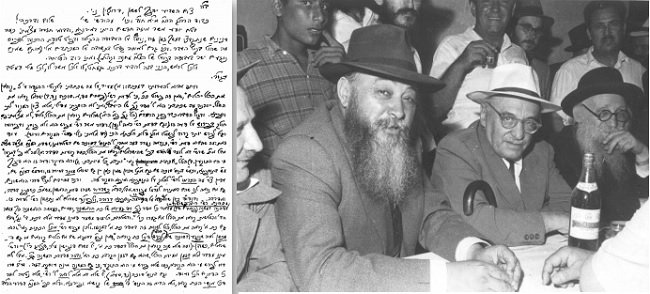

Adorned with Two Crowns
Rabbi Shlomo Yosef Zevin, one of the preeminent rabbanim in Eretz Yisroel, was an extraordinary Torah personality. He was a superlative writer and speaker. * A profile about a Chassidic rav who sacrificed for Judaism in Russia, and was later one of the great rabbinic personalities in Eretz Yisroel.
By Refael Dinari 
Rabbi Shlomo Yosef Zevin was born in 5650 (1890) in Kazamirov, in the Pinsk district. He first learned Torah from his father, R’ Aharon Mordechai, a Chabad rav in Kazamirov, a descendant of the Maharal of Prague. Then he learned in the yeshiva in Mir, from the rosh yeshiva, Rabbi Eliyahu Boruch Kamai. From there he went to Bobruisk and studied under the Admur, R’ Shmaryahu Noach Schneersohn, the grandson of the Tzemach Tzedek, who became his primary teacher of Chassidus.
Due to his clear thinking and powerful intellect, he was greatly beloved by the g’dolei ha’Torah and especially by R’ A. M. Steinberg of Brod, R’ Shimon Shkop of Grodno, and R’ Itzikel Rabinowitz of Ponovezh. At that time, he also met the Rogatchover Gaon.
Due to their acquaintance which resulted from their correspondence in Torah discourse, R’ Zevin wrote the Rogatchover that he wanted to receive smicha from him. The gaon wrote back that he would be in R’ Zevin’s area Tisha B’Av time, at which time he should pay him a visit and receive his smicha. And that is what happened. On the fast day, R’ Zevin went to the Rogatchover’s house and received smicha from him. When he was asked whether he observed the Rogatchover’s behavior on that day, he enthused, “He was on fire with divrei Torah!” The young Rav Zevin also received smicha from the Aruch HaShulchan.
In 5671 he edited a special column of Talmudic riddles in the Torah journal Shaarei Torah and many of the young g’dolei ha’Torah of the time participated. Some of them later became the gaonim of the generation.
In the book Oholei Sheim (a history of Russian rabbis, published over seventy years ago), it says about R’ Zevin: “A skilled writer in our holy tongue.” Even before World War I he published a number of anonymous columns in which he discussed actual events in the lives of Jews in Czarist Russia and challenged those who were trying to promote assimilation. Later it was discovered that the writer was none other than a seventeen year old rabbi who became rabbi of Kazamirov upon the passing of his father. Even then he was well known as a prodigious scholar in Shas and poskim. Many of his explanations and exegetic novellae are found in the Torah journals of the time.
He was a rav in Novozivkov in White Russia (Belarus) during the Communist Revolution. When R’ Dovid Tzvi Chein moved to Eretz Yisroel, the members of the community of Chernigov offered R’ Zevin the position. Although this was a bigger and more honorable position than the rabbanus in Novozivkov, he turned down the offer and said he was busy building a mikva in his town and he knew that if he left, there wouldn’t be a mikva.
After the Revolution, R’ Zevin served as the Jewish representative to a national convention in Ukraine. He was also a soldier in the army of the Rebbe Rayatz in his war against religious persecution.
MEETING OF RABBANIM
In Cheshvan of 5687, the Rebbe Rayatz convened a convention of rabbanim in the Soviet Union. R’ Zevin was appointed secretary of the meeting and he delivered a detailed lecture about communities and their roles. He was also asked to speak at the closing of the event, and he spoke about the importance of the convention in giving a public voice to religious Jewry based on Torah, and proclaimed that no force in the world would ever budge it.
Before the Rebbe Rayatz left Russia he set up a committee of four rabbanim who would work together with him in disseminating Judaism. R’ Zevin was one of the four and the other three were the gaonim, R’ Yechezkel Abramsky, rav of Slutzk, R’ Yaakov Kalmes, rav of Moscow, and R’ M. M. Gluskin, rav of Minsk. After the Rebbe left Russia, he sent money to this committee for their continued work.
In 5688, Rabbi Abramsky and Rabbi Zevin published an issue of Yagdil Torah, which had been silenced for a number of years. The publication of a journal of chiddushei Torah under the bylines of the rabbinic authors was a brazen act of defiance against the wicked communists. In the second edition which appeared for Pesach, Rav Zevin placed an ad which said that whoever knew of a city with a vacancy for a shochet, should let him know.
The rabbanim continued to correspond with the Rebbe but did so in code so that R’ Zevin was “Rashi,” the initials of his name; R’ Abramsky was “Tosefta” for his writing on the Tosefta called Chazon Yechezkel; R’ Yaakov Kalmes was “Rabbeinu Tam” because his name was Yaakov (and Yaakov Avinu was an “ish tam”); and R’ Gluskin was “Seder Ha’doros” because he wrote a history book when he was the rav of Minsk.
The letters that R’ Zevin wrote to the Rebbe were masterpieces of cipher. They looked like chiddushei Torah with quotes and sources, but they contained detailed reports about the receipt of money and its disbursement and about the underground activities.
In 5689-90, when the Rebbe Rayatz visited the United States to raise funds for Soviet Jewry, he received a letter from R’ Zevin without his signature. It contained a detailed description of religious life in the Soviet Union. The letter was printed in a Yiddish language newspaper in Chicago.
When the Rebbe was arrested, a telegram was sent from the Rebbe’s house to R’ Zevin in Novozivkov, but in order not to get him into trouble they wrote that the uncle had been taken to the hospital. When the Rebbe was released on 12 Tammuz, a telegram was sent which said the uncle had been released from the hospital. R’ Zevin, who wanted to bless the Rebbe, immediately sent a telegram with blessings for the uncle’s recovery. He was afraid to write his name and since he knew that the Rebbe understood, based on the city, who was writing, he fooled the officials and wrote “Boruch” as the first name and “Matir Asurim” as the last name. The Rebbe greatly enjoyed his cleverness and praised it several times afterwards.
On Tisha B’Av 5687, R’ Zevin went to the Rebbe who spent six hours telling him about the arrest and imprisonment. The Rebbe wanted R’ Zevin to write this up. This did not end up happening and the Rebbe himself wrote an account of his arrest.
A LION ROSE FROM BAVEL
R’ Zevin’s acquaintance with the Rebbe MH”M began in the period when the shidduch was first proposed with the Rebbetzin. Since R’ Zevin had a reputation as a genius, the Rebbe Rayatz wanted him to talk with his prospective son-in-law in learning. For an entire night, R’ Zevin traveled with the Rebbe by train and spoke to him in learning and was amazed by the young bachur. Over twenty-five years later, when he was already living in Eretz Yisroel, he was among the leading signatories of the “k’sav hiskashrus” to the Rebbe as the seventh leader of the Chabad movement.
Years later, in 1984, when the Sadigora Rebbe visited the Rebbe, the executive director of the Sadigora institutions mentioned that he was a ben-bayis by R’ Zevin. The Rebbe said: You knew him when he was in an expansive state, living in Yerushalayim, but I knew him when he was living in constraint in Russia, at a time when involvement in everything having to do with the spread of Judaism entailed danger. And nevertheless, he did not refrain but was moser nefesh to carry out the work and shlichus of the Rebbe, my father-in-law, in matters of spreading Judaism. He was involved on all fronts and all the battles to establish chadarim, mikvaos, etc.
The government’s persecution of him was no secret and his friends outside the Iron Curtain tried to help him. The Rebbe himself wrote a few letters to Rav Kook asking for help for R’ Zevin to get out of Russia. In 1935, R’ Zevin arrived in Eretz Yisroel after R’ Abramsky, who was already serving as rav in London, paid a large ransom to the Soviets for his right to emigrate.
As soon as he arrived in Eretz Yisroel, he was acknowledged by the g’dolei ha’rabbanim and roshei yeshivos as a prodigious scholar and genius. R’ Chaim Ozer Grodzinsky wrote about his arrival, “a lion rose from Bavel.”
In particular, R’ Zevin was a spokesman for Russian rabbis, many of whom moved to Eretz Yisroel at that time. He would publish articles and monographs in HaBoker and the religious weekly HaYesod about Jews and Judaism in Soviet Russia. When HaTzofeh was founded, he was asked to write a weekly book review on new Torah books.
Although he did not go to the Rebbe, he was always curious to hear the impressions of those who came back from the Rebbe’s court. R’ Shmuel Eliezer Halperin recounted, “When I went to the Rebbe for the first time, for Tishrei 5724, we agreed in advance that I would describe my experiences. While I was at 770 and overcome by the G-dly revelation in that holy place, I wrote him a letter which said, among other things, that now I sensed within me the truth of what I had heard at farbrengens from elder Chassidim, that Chabad leaders each in their time are “head and shoulders above,” compared to other tzaddikim and geonim in their generation.
“When I returned to Eretz Yisroel, he was waiting eagerly to hear my personal impressions of the trip. I immediately went to visit him and I told him about a number of events that happened when I was at 770. He reacted, ‘You have a good eye.’”
When he heard a miracle story concerning the Rebbe, he would be infused with excitement and joy and he would repeat it to whoever he saw that day, with Chassidishe wonder and with a glowing face.
THE CROWN OF THE WRITTEN TORAH AND THE CROWN OF THE ORAL TORAH
R’ Zevin was outstanding in both the written and oral realms; he was a magnificent orator and writer. His greatest contribution and main credit are for creating a style for Torah literature which consists of precision, conciseness and clarity. R’ Zevin was a genius in terse verse, which was comprehensive, clear and to the point. Each sentence which he formulated was a masterpiece. His writing is clear and is devoid of the dryness characteristic of academic writings while also being distant from poetic excess.
He demonstrated that even complicated halachic problems can be written in clear Hebrew, understandable by all. Many young writers followed in his footsteps. Even his writings on complicated subjects are easily read and you don’t sense the effort invested in the work. Even the most difficult research that he wrote was easily read.
He is mainly famous for his Encyclopedia Talmudis, being the founder and director of this grand scale Torah project. For over thirty-five years he was the editor-in-chief of the encyclopedia, as the creative, guiding and editorial leader, whose imprimatur is imprinted on all of the entries that cover a vast range of topics. This is how he summed up the encyclopedia, “Although the Encyclopedia Talmudis is meant primarily for Torah scholars for whom Torah is their profession, both in terms of presenting the full scope of an issue in all of its ramifications and for clarifying and bringing to light the various positions in the Rishonim and Acharonim and their sources, there is no doubt that our desire is to help the broader public as well.”
The Rebbe spoke in praise of this immense project and suggested that those who learn Torah use it while studying a halacha or topic, by making use of the wealth of information it provides.
R’ Zevin merited to oversee the publication of fifteen volumes, and he also arranged and set the guidelines for the writing of all the entries that will eventually be written.
FLEEING HONOR
As one who was instilled with a Chassidishe chinuch, he fled from honor. A certain gaon received R’ Zevin’s approbation for his book but when the page of approbations was brought to R’ Zevin, he saw that above his approbation it said, “The approbation of the Sar HaTorah etc.” R’ Zevin was taken aback and called the author and demanded that he reprint the page and omit the superlatives. The author tried to protest but R’ Zevin insisted. In the end, the author maintained that reprinting the page would be expensive. R’ Zevin said, “Change it and I’ll pay for it.”
***
R’ Zevin passed away on 21 Adar I, 5738/1978. Before his passing, while lying in the hospital, he suddenly rose in bed and told his grandson, “Take out a pen and paper and write down: I hereby make known my wishes that on that day [of my passing] there shall be no eulogies and on the gravestone it should say only, here lies Rabbi etc., and no more.” With his remaining strength he signed his name.
He explained to his shocked grandson, “I know that you are likely to want to write all sorts of titles on the gravestone as is customary nowadays. You should know that I forbid it absolutely, and do not dare add anything else aside from the title ‘HaRav.’ In heaven they demand from the deceased to show if he is truly deserving of all the titles and I do not want to be held for mockery and ridicule.”
Beis Moshiach (staff). "Adorned with Two Crowns." Beis Moshiach, no. 1011 (March 2, 2016).